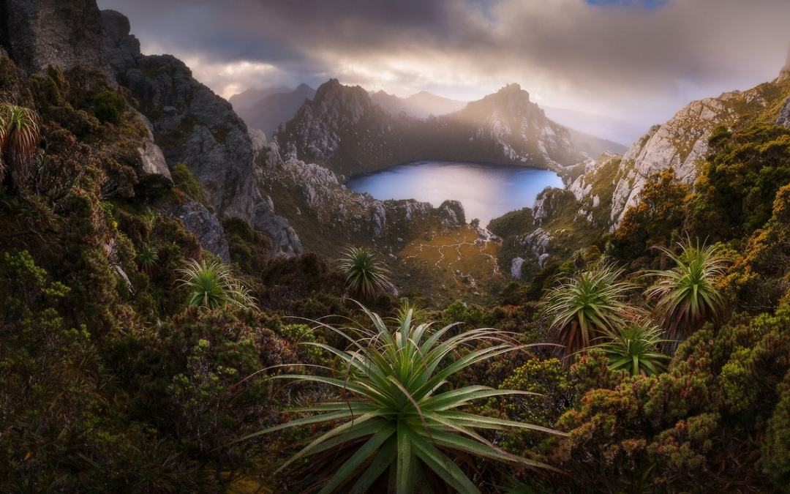
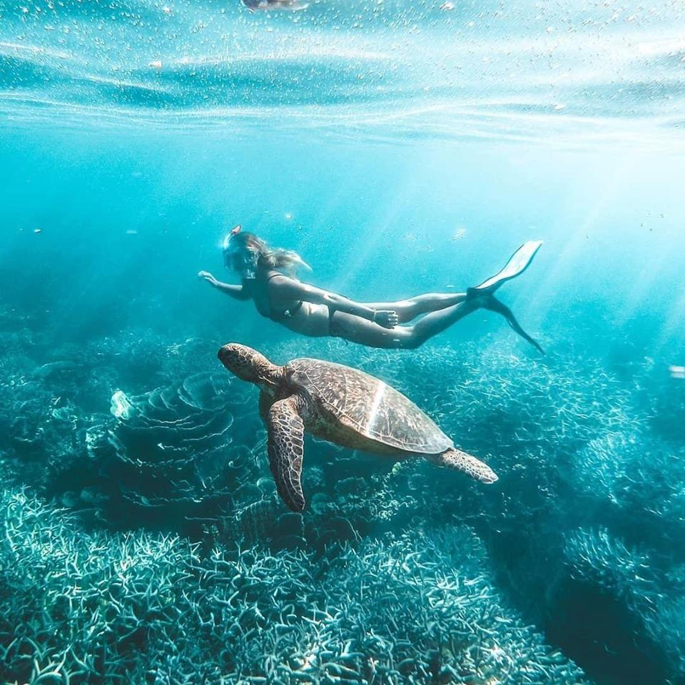

About Tasmania
Tasmania, an isolated island state off Australia’s south coast, is known for its vast, rugged wilderness areas, largely protected within parks and reserves. On the Tasman Peninsula, the 19th-century Port Arthur penal settlement is now an open-air museum.
In Hobart, the port capital, Salamanca Place's Georgian warehouses now house galleries and boutiques. Its Museum of Old and New Art has a contemporary edge.
Toponymy
Tasmania is named after Dutch explorer Abel Tasman, who made the first reported European sighting of the island on 24 November 1642. Tasman named the island Anthony van Diemen's Land after his sponsor Anthony van Diemen, the Governor of the Dutch East Indies.
The name was later shortened to Van Diemen's Land by the British. It was officially renamed Tasmania in honour of its first European discoverer on 1 January 1856
 